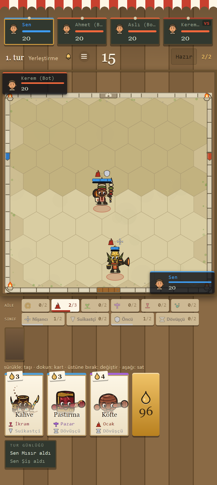
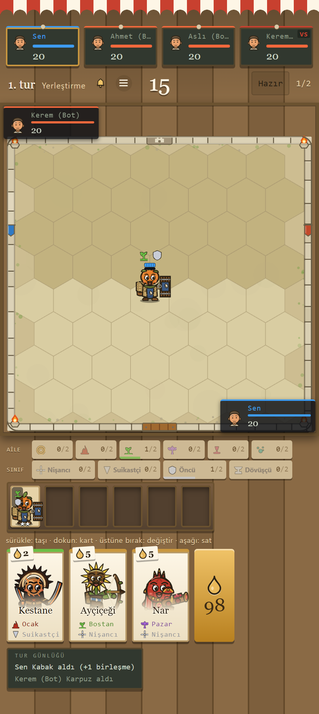
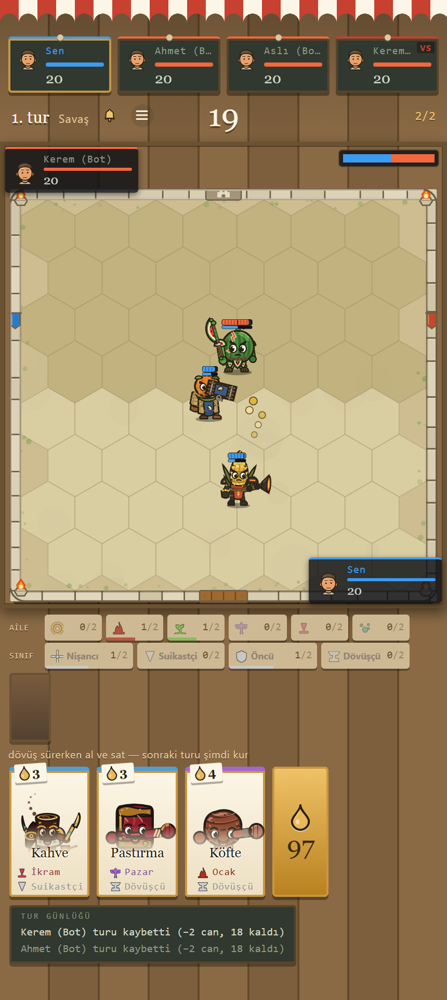
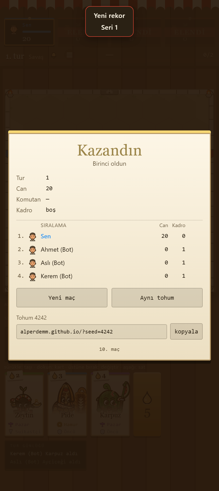

A market-stall auto-battler
Kitchen Tactics
Build a team of living ingredients, merge matching pairs, and watch the round cook itself.
No download. No account. English and Turkish.
Live match replay
The board couldn't load this time — but the merge below still works.
The core loop
Merge two. Star up.
Two matching units combine into one 2★ unit.
The Roster
Every ingredient on the counter, live. Hover a card — or tab to it — and watch it swing.
How a Run Plays
Five steps. Read only the headings and you already know the game.
-

Buy from the stall
The shop restocks every round. Ingredients cost between 2 and 5 — spend what you can afford.
-
Place your board
Set your ingredients on the hex grid before the round starts. Position is half the fight.
-

Merge two into one
Two matching ingredients merge into a stronger one. Merging is the whole economy.
-

Let the round cook itself
No input during the fight — it plays out on its own, board against board.
-

Climb the standings
Win rounds, keep your board standing, and outlast the table.
The Art We Didn't Ship
Before the counter and the awning, six other directions were tried. Here they are — including the one that named the studio.
Try it now
Play
The full first phase, right here — no download, no account. Press Play and the phone boots the real build.
Off until you turn it on — nothing here plays audio by itself.
The studio
Tezgah
Tezgah means both the market stall and the workbench — the counter a vendor sells from, and the bench a craftsman builds at. Kitchen Tactics is built at both at once: every rig on the roster is hand-drawn, and the board they fight on is the same stall counter this page stands on.
This is a one-person studio's first release — one of seven fully worked art directions before this one was chosen. What is next is more of that same care, not more of everything at once.